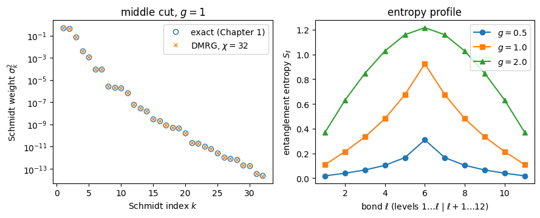
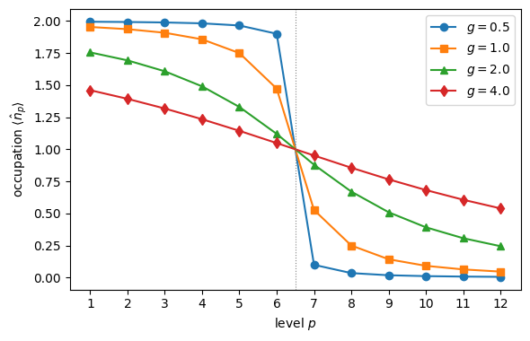
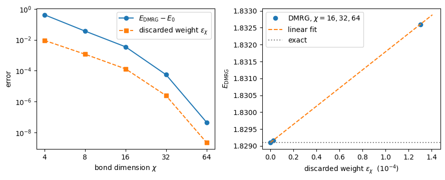
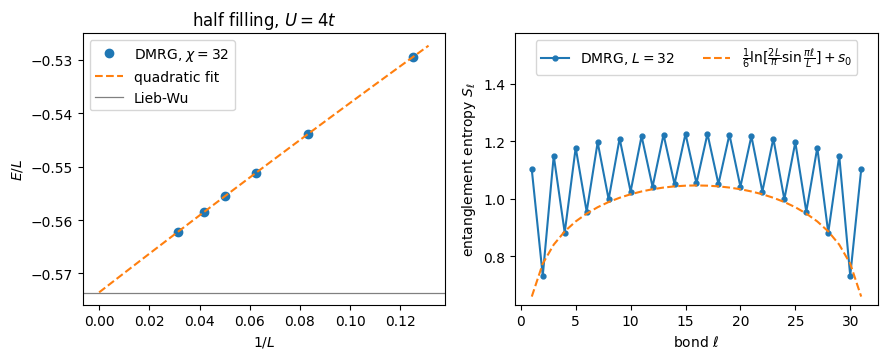

13. The density matrix renormalisation group#
Companion notebook to the chapter on the density matrix renormalisation
group of Quantum mechanics for many-particle systems. The code is the
same as in BookManybody/BookPrograms/chapterdmrg/dmrg.py.
The full configuration-interaction calculations of the earlier chapters store a state as one amplitude per Slater determinant, and the number of determinants grows exponentially with the number of single-particle levels. The DMRG stores a state instead as a matrix product state (MPS),
a product of matrices of size at most \(\chi\times\chi\), one per site of a chain, and optimises the matrices one bond at a time. The Schmidt decomposition of Chapter 1 is applied at every bond in turn; truncating it to the \(\chi\) largest Schmidt values is what makes the method polynomial, and the discarded weight tells us what the truncation cost.
The three models of the book are mapped on a chain by treating each doubly-degenerate level \(p\) as one site with the four states \(|0\rangle\), \(|{\uparrow}\rangle\), \(|{\downarrow}\rangle\) and \(|{\uparrow\downarrow}\rangle\), with the Jordan-Wigner strings of Chapter 3 taking care of the fermionic signs. The Hamiltonians are written as matrix product operators (MPO) built automatically from the list of operator strings that also defines the exact diagonalisation, so that the two methods are guaranteed to solve the same problem.
Contents:
Sites, modes and Jordan-Wigner strings
Matrix product operators of the three models
The pairing model: the energies of Chapter 4 and the entropy of Chapter 1
The pairing plus particle-hole model: convergence and extrapolation
The Hubbard chain: beyond exact diagonalisation
import sys, os, glob, time
import numpy as np
import matplotlib.pyplot as plt
# the chapter programs live in BookPrograms/chapterNN (and chapterdmrg);
# put them all on the path
for _pattern in ("chapter*", "appendix*"):
for _d in sorted(glob.glob(os.path.join("..", "BookManybody",
"BookPrograms", _pattern))):
if _d not in sys.path:
sys.path.insert(0, _d)
import dmrg
from dmrg import (pairing_terms, particle_hole_terms, hubbard_terms,
number_penalty_terms, number_terms, occupation_terms,
add_terms, build_mpo, mpo_bond_dimensions, mpo_dense,
exact_ground_state, sector_states, sparse_hamiltonian,
chain_index, MPS, DMRG, dmrg_ground_state,
entanglement_entropy, lieb_wu_energy, mode)
np.set_printoptions(precision=6, suppress=True, linewidth=120)
13.1. 1. Sites, modes and Jordan-Wigner strings#
A site carries two modes, \(a\) (spin up, or the time-reversal partner \(+\) of the pairing model) and \(b\) (spin down, or \(-\)), so the local space is \(d=4\). Inside the site the creation operators are \(c^\dagger_a=\sigma^+\otimes I\) and \(c^\dagger_b=\sigma^z\otimes\sigma^+\), which anticommute; between sites the Jordan-Wigner string is the parity \((-1)^{n_a+n_b}\) of every site to the left. Let us verify the anticommutation relations on one site, and that a two-site product with the string in place anticommutes across sites.
I4 = np.eye(4)
ops = {"c_a": dmrg.C_A, "c_b": dmrg.C_B}
print("one site, {c_i, c_j^+} = delta_ij and {c_i, c_j} = 0:")
for ni, ci in ops.items():
for nj, cj in ops.items():
acomm = ci @ cj.T + cj.T @ ci
print(f" {{{ni}, {nj}^+}} = delta_ij: {np.allclose(acomm, I4 * (ni == nj))},"
f" {{{ni}, {nj}}} = 0: {np.allclose(ci @ cj + cj @ ci, 0)}")
# two sites: c on site 1 must carry the parity of site 0
c0 = np.kron(dmrg.C_A, I4)
c1 = np.kron(dmrg.PARITY, dmrg.C_A) # string on the site to the left
c1_bad = np.kron(I4, dmrg.C_A) # without the string
print("two sites: {c_0, c_1} = 0 with the string:", np.allclose(c0 @ c1 + c1 @ c0, 0),
" without the string:", np.allclose(c0 @ c1_bad + c1_bad @ c0, 0))
one site, {c_i, c_j^+} = delta_ij and {c_i, c_j} = 0:
{c_a, c_a^+} = delta_ij: True, {c_a, c_a} = 0: True
{c_a, c_b^+} = delta_ij: True, {c_a, c_b} = 0: True
{c_b, c_a^+} = delta_ij: True, {c_b, c_a} = 0: True
{c_b, c_b^+} = delta_ij: True, {c_b, c_b} = 0: True
two sites: {c_0, c_1} = 0 with the string: True without the string: False
13.2. 2. Matrix product operators of the three models#
Every Hamiltonian of the chapter is a list of terms, each a coefficient
and a string of creation and annihilation operators on the \(2L\) modes.
build_mpo converts the list into an MPO: each string becomes a product
of one \(4\times4\) operator per site (with the parity on the sites the
string passes over), and the sum of these products is compressed bond by
bond with the SVD, so that the bond dimension is the smallest one that
represents the operator exactly. The pairing interaction
\(-\tfrac{g}{2}\sum_{pq}P^+_pP^-_q\) is a product of two sums and needs the
four automaton states nothing placed, \(P^+\) placed, \(P^-\) placed,
done; the particle-hole interaction with its Jordan-Wigner strings needs
more; a periodic bond has to be carried across the whole chain.
L = 6
for name, terms in (("pairing, g = 1", pairing_terms(L, 1.0)),
("pairing + particle-hole, g = 1, f = 0.5",
add_terms(pairing_terms(L, 1.0), particle_hole_terms(L, 0.5))),
("Hubbard chain, open, U = 4", hubbard_terms(L, 1.0, 4.0)),
("Hubbard ring, periodic, U = 4", hubbard_terms(L, 1.0, 4.0, pbc=True)),
("number penalty (N - 6)^2", number_penalty_terms(L, 6, 1.0))):
W = build_mpo(terms, L)
print(f" {name:42s} terms = {len(terms):5d} "
f"MPO bond dimensions {mpo_bond_dimensions(W)}")
pairing, g = 1 terms = 48 MPO bond dimensions [4, 4, 4, 4, 4]
pairing + particle-hole, g = 1, f = 0.5 terms = 480 MPO bond dimensions [12, 14, 14, 14, 12]
Hubbard chain, open, U = 4 terms = 26 MPO bond dimensions [6, 6, 6, 6, 6]
Hubbard ring, periodic, U = 4 terms = 30 MPO bond dimensions [6, 10, 10, 10, 6]
number penalty (N - 6)^2 terms = 157 MPO bond dimensions [3, 3, 3, 3, 3]
The MPO and the sparse Hamiltonian of the exact diagonalisation are built from the same list; for three sites we can form the dense \(64\times64\) matrix of the MPO and compare it with the Hamiltonian in the \(N=3\) sector.
L = 3
terms = add_terms(pairing_terms(L, 1.0), particle_hole_terms(L, 0.5))
H = mpo_dense(build_mpo(terms, L))
states = sector_states(L, 3)
Hs = sparse_hamiltonian(terms, L, states).toarray()
idx = np.array([chain_index(st, L) for st in states])
print(f"max |H_MPO - H_ED| in the N = 3 sector = {np.abs(H[np.ix_(idx, idx)] - Hs).max():.1e}")
print(f"Hermitian: max |H - H^T| = {np.abs(H - H.T).max():.1e}")
max |H_MPO - H_ED| in the N = 3 sector = 3.6e-15
Hermitian: max |H - H^T| = 2.2e-15
13.3. 3. The pairing model#
13.3.1. The four-level model of Chapter 4#
The DMRG works in the full Fock space of the chain, \(4^L\) states, and is told the particle number only through the penalty \(\lambda(\hat N-N_0)^2\) added to the MPO. For four levels and four particles \(\chi=16=4^{L/2}\) makes the MPS exact, and the method must reproduce the seniority-zero energies of Table 4.2 – without ever being told that the ground state has seniority zero.
L, N = 4, 4
reference = {0.5: 1.41677428, 1.0: 0.63554847}
print(f"{'g':>6s} {'E_exact (chapter 4)':>20s} {'E_DMRG':>14s} {'error':>10s} {'<N>':>8s} {'chi':>4s}")
for g in (0.5, 1.0):
terms = pairing_terms(L, g)
solver = dmrg_ground_state(terms, L, N, chi_max=16)
e_ed = exact_ground_state(terms, L, N)
print(f"{g:6.2f} {reference[g]:20.8f} {solver.energy:14.8f} "
f"{solver.energy - e_ed:10.1e} {solver.particles:8.4f} "
f"{max(solver.mps.bond_dimensions()):4d}")
g E_exact (chapter 4) E_DMRG error <N> chi
0.50 1.41677428 1.41677428 3.3e-15 4.0000 4
1.00 0.63554847 0.63554847 8.2e-15 4.0000 4
13.3.2. Twelve levels, six pairs: the entropy of Chapter 1#
Chapter 1 computed the Schmidt spectrum of the exact ground state of the twelve-level pairing model across the cut between levels 6 and 7 (\(\delta=1\), \(g=0.5\) in the convention of Chapter 1, which is \(\xi=1\), \(g=1\) in that of Chapter 4) and found the entanglement entropy \(0.9238\). The DMRG never sees the exact state; it truncates at every bond. We run it with \(\chi=8\), \(16\) and \(32\) and compare with the seniority-zero diagonalisation of the \(\binom{12}{6}=924\) pair configurations, which also gives us the exact Schmidt spectrum for the figure.
from itertools import combinations
def seniority_zero_ground_state(L, n_pairs, g, xi=1.0):
"Exact ground state in the seniority-zero space: energy, basis, vector."
basis = list(combinations(range(L), n_pairs))
index = {c: i for i, c in enumerate(basis)}
H = np.zeros((len(basis), len(basis)))
for c, i in index.items():
occ = set(c)
H[i, i] += 2.0 * xi * sum(c) - 0.5 * g * n_pairs
for q in c:
for p in range(L):
if p not in occ:
H[index[tuple(sorted(occ - {q} | {p}))], i] -= 0.5 * g
w, v = np.linalg.eigh(H)
return w[0], basis, v[:, 0]
def schmidt_spectrum_seniority_zero(L, basis, vec, cut):
"Singular values of the coefficient matrix across the cut (levels < cut | >= cut)."
left = sorted({tuple(p for p in c if p < cut) for c in basis})
right = sorted({tuple(p for p in c if p >= cut) for c in basis})
il = {c: i for i, c in enumerate(left)}
ir = {c: i for i, c in enumerate(right)}
C = np.zeros((len(left), len(right)))
for c, a in zip(basis, vec):
C[il[tuple(p for p in c if p < cut)], ir[tuple(p for p in c if p >= cut)]] = a
return np.linalg.svd(C, compute_uv=False)
L, N, g = 12, 12, 1.0
e_ref, basis, vec = seniority_zero_ground_state(L, N // 2, g)
sigma_exact = schmidt_spectrum_seniority_zero(L, basis, vec, L // 2)
print(f"seniority-zero diagonalisation (924 states): E = {e_ref:.10f}, "
f"S(middle cut) = {entanglement_entropy(sigma_exact):.4f}")
pairing_runs = {}
print(f"{'chi':>4s} {'E_DMRG':>16s} {'error':>10s} {'discarded':>10s} {'S(middle)':>10s} {'time':>8s}")
for chi in (8, 16, 32):
t0 = time.time()
solver = dmrg_ground_state(pairing_terms(L, g), L, N, chi_max=chi, max_sweeps=10)
pairing_runs[chi] = solver
print(f"{chi:4d} {solver.energy:16.10f} {solver.energy - e_ref:10.1e} "
f"{solver.discarded[-1]:10.1e} {solver.entropies[L // 2 - 1]:10.4f} "
f"{time.time() - t0:7.1f}s")
seniority-zero diagonalisation (924 states): E = 24.8391727485, S(middle cut) = 0.9238
chi E_DMRG error discarded S(middle) time
---------------------------------------------------------------------------
ValueError Traceback (most recent call last)
ValueError: unexpected array size: new_size=1, got array with arr_size=0
The above exception was the direct cause of the following exception:
ValueError Traceback (most recent call last)
Cell In[6], line 39
37 for chi in (8, 16, 32):
38 t0 = time.time()
---> 39 solver = dmrg_ground_state(pairing_terms(L, g), L, N, chi_max=chi, max_sweeps=10)
40 pairing_runs[chi] = solver
41 print(f"{chi:4d} {solver.energy:16.10f} {solver.energy - e_ref:10.1e} "
42 f"{solver.discarded[-1]:10.1e} {solver.entropies[L // 2 - 1]:10.4f} "
43 f"{time.time() - t0:7.1f}s")
File ~/Teaching/ManyBodyPhysics/doc/LectureNotes/../BookManybody/BookPrograms/chapterdmrg/dmrg.py:605, in dmrg_ground_state(terms, L, n_particles, chi_max, lam, max_sweeps, tol, seed, verbose)
603 full = add_terms(terms, number_penalty_terms(L, n_particles, lam))
604 solver = DMRG(build_mpo(full, L), chi_max=chi_max, seed=seed)
--> 605 solver.run(max_sweeps=max_sweeps, tol=tol, verbose=verbose)
606 solver.energy = solver.mps.expectation_terms(terms)
607 solver.particles = solver.mps.expectation_terms(number_terms(L))
File ~/Teaching/ManyBodyPhysics/doc/LectureNotes/../BookManybody/BookPrograms/chapterdmrg/dmrg.py:584, in DMRG.run(self, max_sweeps, tol, verbose)
582 previous = np.inf
583 for n in range(1, max_sweeps + 1):
--> 584 E = self.sweep()
585 if verbose:
586 print(f" sweep {n:2d} E = {E:.12f} "
587 f"max discarded weight = {self.discarded_sweep:.1e} "
588 f"chi = {max(self.mps.bond_dimensions())}")
File ~/Teaching/ManyBodyPhysics/doc/LectureNotes/../BookManybody/BookPrograms/chapterdmrg/dmrg.py:571, in DMRG.sweep(self)
569 for i in range(self.L - 1):
570 theta = np.tensordot(self.mps.A[i], self.mps.A[i + 1], axes=(2, 0))
--> 571 energy, theta = self._optimise(i, theta)
572 self._split(i, theta, going_right=True)
573 for i in range(self.L - 2, -1, -1):
File ~/Teaching/ManyBodyPhysics/doc/LectureNotes/../BookManybody/BookPrograms/chapterdmrg/dmrg.py:542, in DMRG._optimise(self, i, theta)
540 w, v = eigh(Hd, subset_by_index=[0, 0])
541 return float(w[0]), v[:, 0].reshape(shape)
--> 542 E, v = lanczos_lowest(matvec, theta.reshape(-1))
543 return E, v.reshape(shape)
File ~/Teaching/ManyBodyPhysics/doc/LectureNotes/../BookManybody/BookPrograms/chapterdmrg/dmrg.py:452, in lanczos_lowest(matvec, v0, m, tol, restarts)
450 w = w - np.dot(u, w) * u
451 b = float(np.linalg.norm(w))
--> 452 ev, evec = eigh_tridiagonal(alpha, beta, select="i",
453 select_range=(0, 0))
454 if b < 1e-12 or b * abs(evec[-1, 0]) < tol:
455 converged = True
File ~/miniforge3/envs/myenv/lib/python3.9/site-packages/scipy/linalg/_decomp.py:1334, in eigh_tridiagonal(d, e, eigvals_only, select, select_range, check_finite, tol, lapack_driver)
1331 # If getting eigenvectors, needs to be block-ordered (B) instead of
1332 # matrix-ordered (E), and we will reorder later
1333 order = 'E' if eigvals_only else 'B'
-> 1334 m, w, iblock, isplit, info = stebz(d, e, select, vl, vu, il, iu, tol,
1335 order)
1336 else: # 'stemr'
1337 # ?STEMR annoyingly requires size N instead of N-1
1338 e_ = empty(e.size+1, e.dtype)
ValueError: failed in converting 2nd argument `e' of _flapack.dstebz to C/Fortran array
The entropy profile – the entanglement entropy across every bond of the chain – is the picture of the area law: it rises from the ends, where a cut separates one level from eleven, and flattens in the bulk. We compute it for three couplings, and keep the ground states for the occupation numbers below.
couplings = (0.5, 1.0, 2.0)
profiles = {}
states_g = {}
for gg in couplings:
if gg == 1.0:
solver = pairing_runs[32]
else:
solver = dmrg_ground_state(pairing_terms(L, gg), L, N, chi_max=32, max_sweeps=10)
profiles[gg] = solver.entropies.copy()
states_g[gg] = solver
print(f"g = {gg:3.1f}: E = {solver.energy:.8f} S(middle cut) = {solver.entropies[L // 2 - 1]:.4f}"
f" max S = {solver.entropies.max():.4f}")
sigma_dmrg = pairing_runs[32].mps.schmidt_values(L // 2)
fig, (ax1, ax2) = plt.subplots(1, 2, figsize=(9.0, 3.7))
k = np.arange(1, 33)
ax1.semilogy(k, sigma_exact[:32]**2, "o", mfc="none", ms=6, label="exact (Chapter 1)")
ax1.semilogy(k[:len(sigma_dmrg)], sigma_dmrg**2, "x", ms=5, label=r"DMRG, $\chi=32$")
ax1.set_xlabel(r"Schmidt index $k$")
ax1.set_ylabel(r"Schmidt weight $\sigma_k^2$")
ax1.set_title(r"middle cut, $g=1$")
ax1.legend()
bonds = np.arange(1, L)
for gg, mk in zip(couplings, ("o-", "s-", "^-")):
ax2.plot(bonds, profiles[gg], mk, label=rf"$g={gg}$")
ax2.set_xlabel(r"bond $\ell$ (levels $1\ldots\ell$ | $\ell+1\ldots 12$)")
ax2.set_ylabel(r"entanglement entropy $S_\ell$")
ax2.set_title("entropy profile")
ax2.legend()
fig.tight_layout()
plt.show()
g = 0.5: E = 28.14608852 S(middle cut) = 0.3097 max S = 0.3097
g = 1.0: E = 24.83917275 S(middle cut) = 0.9238 max S = 0.9238
g = 2.0: E = 11.96102442 S(middle cut) = 1.2163 max S = 1.2163

13.3.3. Occupation numbers#
The DMRG state conserves the particle number exactly (the penalty enforces it), so the occupation numbers \(\langle\hat n_p\rangle\) of the twelve levels show the correlated smearing of the Fermi surface without the number fluctuations of the BCS state of Chapter 6.
occ_couplings = (0.5, 1.0, 2.0, 4.0)
occupations = {}
for gg in occ_couplings:
solver = states_g.get(gg) or dmrg_ground_state(pairing_terms(L, gg), L, N,
chi_max=32, max_sweeps=10)
occupations[gg] = np.array([
solver.mps.expectation_terms(occupation_terms(p, 0) + occupation_terms(p, 1))
for p in range(L)])
print(f"g = {gg:3.1f}: n_p =", np.round(occupations[gg], 4), f" sum = {occupations[gg].sum():.6f}")
fig, ax = plt.subplots(figsize=(6.0, 3.9))
levels = np.arange(1, L + 1)
for gg, mk in zip(occ_couplings, ("o-", "s-", "^-", "d-")):
ax.plot(levels, occupations[gg], mk, label=rf"$g={gg}$")
ax.axvline(6.5, color="gray", lw=0.8, ls=":")
ax.set_xlabel(r"level $p$")
ax.set_ylabel(r"occupation $\langle \hat n_p\rangle$")
ax.set_xticks(levels)
ax.legend()
fig.tight_layout()
plt.show()
g = 0.5: n_p = [1.9944 1.9923 1.9887 1.9818 1.9651 1.9006 0.0994 0.0349 0.0182 0.0113 0.0077 0.0056] sum = 12.000000
g = 1.0: n_p = [1.9534 1.9365 1.9084 1.8572 1.7499 1.4731 0.5269 0.2501 0.1428 0.0916 0.0635 0.0466] sum = 12.000000
g = 2.0: n_p = [1.7554 1.6932 1.6081 1.4907 1.3299 1.1201 0.8799 0.6701 0.5093 0.3919 0.3068 0.2446] sum = 12.000000
g = 4.0: n_p = [1.4607 1.3934 1.3178 1.2343 1.1438 1.0485 0.9515 0.8562 0.7657 0.6822 0.6066 0.5393] sum = 12.000000

13.4. 4. The pairing plus particle-hole model#
The particle-hole interaction of Chapter 7 breaks pairs, so the ground state is no longer of seniority zero and the exact diagonalisation has to be done in the full \(S_z=0\) sector. Four levels and four particles first, at the couplings of Chapter 7.
L, N = 4, 4
print(f"{'g':>6s} {'f':>6s} {'E_exact':>14s} {'E_DMRG':>14s} {'error':>10s}")
for g, f in ((0.5, 0.025), (0.7, 0.05), (1.0, 0.05), (1.0, 0.5)):
terms = add_terms(pairing_terms(L, g), particle_hole_terms(L, f))
e_ed = exact_ground_state(terms, L, N)
solver = dmrg_ground_state(terms, L, N, chi_max=16)
print(f"{g:6.2f} {f:6.3f} {e_ed:14.8f} {solver.energy:14.8f} {solver.energy - e_ed:10.1e}")
g f E_exact E_DMRG error
0.50 0.025 1.34713265 1.34713265 2.4e-15
0.70 0.050 0.96975878 0.96975878 -1.5e-14
1.00 0.050 0.45058234 0.45058234 4.6e-15
1.00 0.500 -1.69173670 -1.69173670 -8.0e-15
Eight levels and eight particles, \(g=1\), \(f=0.5\): the \(S_z=0\) sector has \(\binom{8}{4}^2=4900\) determinants and is still within reach of exact diagonalisation, so we can follow the DMRG error as a function of \(\chi\). The error is variational, falls by about an order of magnitude per doubling of \(\chi\), and is proportional to the discarded weight – which is what makes the extrapolation to zero discarded weight the standard way of quoting a DMRG energy.
L, N = 8, 8
g, f = 1.0, 0.5
terms = add_terms(pairing_terms(L, g), particle_hole_terms(L, f))
print(f"full N = 8 sector: {len(sector_states(L, N))} determinants, "
f"S_z = 0 sector: {len(sector_states(L, N, N // 2))}")
e_ed = exact_ground_state(terms, L, N, n_a=N // 2)
print(f"exact: E = {e_ed:.10f}")
chis = (4, 8, 16, 32, 64)
ph = {"E": [], "eps": [], "S": []}
print(f"{'chi':>4s} {'E_DMRG':>16s} {'error':>10s} {'discarded':>10s} {'S(middle)':>10s} {'time':>8s}")
for chi in chis:
t0 = time.time()
solver = dmrg_ground_state(terms, L, N, chi_max=chi, max_sweeps=10)
ph["E"].append(solver.energy); ph["eps"].append(solver.discarded[-1])
ph["S"].append(solver.entropies[L // 2 - 1])
print(f"{chi:4d} {solver.energy:16.10f} {solver.energy - e_ed:10.1e} "
f"{solver.discarded[-1]:10.1e} {solver.entropies[L // 2 - 1]:10.4f} {time.time() - t0:7.1f}s")
E_chi, eps_chi = np.array(ph["E"]), np.array(ph["eps"])
full N = 8 sector: 12870 determinants, S_z = 0 sector: 4900
exact: E = 1.8291066715
chi E_DMRG error discarded S(middle) time
4 2.2435302961 4.1e-01 9.1e-03 1.0114 0.7s
8 1.8655652393 3.6e-02 1.2e-03 1.0898 2.6s
16 1.8326023377 3.5e-03 1.3e-04 1.1064 7.3s
32 1.8291612166 5.5e-05 2.4e-06 1.1084 7.6s
64 1.8291067166 4.5e-08 2.2e-09 1.1084 11.9s
# straight-line extrapolation in the discarded weight through the three
# runs with the smallest discarded weights (the converged tail)
a, b = np.polyfit(eps_chi[2:], E_chi[2:], 1)
a2, b2 = np.polyfit(eps_chi[3:], E_chi[3:], 1)
a0, b0 = np.polyfit(eps_chi[:3], E_chi[:3], 1)
print(f"extrapolated energy from chi = 16, 32, 64: {b:.8f} error {b - e_ed:.1e}")
print(f"extrapolated energy from chi = 32, 64: {b2:.8f} error {b2 - e_ed:.1e}")
print(f"extrapolated energy from chi = 4, 8, 16: {b0:.8f} error {b0 - e_ed:.1e} (the cheap runs are off the line)")
print(f"ratio error / discarded weight:", np.round((E_chi - e_ed) / eps_chi, 1))
fig, (ax1, ax2) = plt.subplots(1, 2, figsize=(9.0, 3.7))
ax1.semilogy(chis, E_chi - e_ed, "o-", label=r"$E_{\rm DMRG}-E_0$")
ax1.semilogy(chis, eps_chi, "s--", label=r"discarded weight $\epsilon_\chi$")
ax1.set_xscale("log", base=2)
ax1.set_xticks(chis); ax1.set_xticklabels([str(c) for c in chis])
ax1.set_xlabel(r"bond dimension $\chi$")
ax1.set_ylabel("error")
ax1.legend()
scale = 1e4
xs = np.linspace(0, eps_chi[2] * 1.08, 50)
ax2.plot(scale * eps_chi[2:], E_chi[2:], "o", label=r"DMRG, $\chi=16,32,64$")
ax2.plot(scale * xs, a * xs + b, "--", label="linear fit")
ax2.axhline(e_ed, color="gray", ls=":", label="exact")
ax2.set_xlabel(r"discarded weight $\epsilon_\chi$ ($10^{-4}$)")
ax2.set_ylabel(r"$E_{\rm DMRG}$")
ax2.legend()
fig.tight_layout()
plt.show()
extrapolated energy from chi = 16, 32, 64: 1.82910168 error -5.0e-06
extrapolated energy from chi = 32, 64: 1.82910667 error -4.6e-09
extrapolated energy from chi = 4, 8, 16: 1.81943878 error -9.7e-03 (the cheap runs are off the line)
ratio error / discarded weight: [45.8 31.5 26.8 22.7 20.6]

13.5. 5. The Hubbard chain#
13.5.1. The four-site ring of Chapter 4#
A ring is awkward for an MPS – the bond between the last and the first site is carried through the whole chain – but for four sites \(\chi=16\) is exact and the DMRG reproduces every entry of Table 4.3, energies and double occupancies alike. (\(U=0\) is left out: the half-filled free ring has a degenerate ground state and its double occupancy is not unique.)
table = {2: -2.82842712, 4: -2.10274848, 8: -1.32023496, 16: -0.72286432}
L, N = 4, 4
print(f"{'U/t':>5s} {'E_0 (table)':>14s} {'E_DMRG':>14s} {'error':>10s} {'double occ.':>12s}")
for U in (2, 4, 8, 16):
terms = hubbard_terms(L, 1.0, float(U), pbc=True)
solver = dmrg_ground_state(terms, L, N, chi_max=16)
docc = sum(solver.mps.expectation_terms(
[(1.0, [(mode(i, 0), True), (mode(i, 0), False),
(mode(i, 1), True), (mode(i, 1), False)])]) for i in range(L))
print(f"{U:5d} {table[U]:14.8f} {solver.energy:14.8f} {solver.energy - table[U]:10.1e} {docc:12.6f}")
U/t E_0 (table) E_DMRG error double occ.
2 -2.82842712 -2.82842712 -4.7e-09 0.453082
4 -2.10274848 -2.10274848 -3.5e-09 0.287325
8 -1.32023496 -1.32023496 1.7e-09 0.129992
16 -0.72286432 -0.72286432 -2.4e-09 0.042033
13.5.2. Open chains: towards the thermodynamic limit#
With open ends the chain is what the MPS wants, and we can leave exact diagonalisation behind. The check that replaces it is the Bethe ansatz: Lieb and Wu solved the infinite half-filled chain exactly, with the energy per site
which at \(U=4t\) is \(-0.573729\). An open chain has two ends, each raising the energy by a fixed amount, so \(E/L\to e_\infty+a/L+b/L^2\). The runs below take a few minutes; the \(L=32\) chain at \(\chi=32\) is the most expensive.
e_inf = lieb_wu_energy(4.0)
print(f"Lieb-Wu energy per site of the infinite chain at U = 4t: {e_inf:.6f}")
sizes = (4, 8, 12, 16, 20, 24, 32)
hub = {}
print(f"{'L':>4s} {'E_exact':>14s} {'E_DMRG':>14s} {'E/L':>10s} {'discarded':>10s} {'S(middle)':>10s} {'time':>8s}")
for L in sizes:
chi = 16 if L == 4 else 32
terms = hubbard_terms(L, 1.0, 4.0)
t0 = time.time()
solver = dmrg_ground_state(terms, L, L, chi_max=chi, max_sweeps=10)
hub[L] = solver
if L <= 8:
e_ed = exact_ground_state(terms, L, L, n_a=L // 2)
ed = f"{e_ed:14.8f}"
else:
ed = f"{'--':>14s}"
print(f"{L:4d} {ed} {solver.energy:14.8f} {solver.energy / L:10.6f} "
f"{solver.discarded[-1]:10.1e} {solver.entropies[L // 2 - 1]:10.4f} {time.time() - t0:7.1f}s")
Lieb-Wu energy per site of the infinite chain at U = 4t: -0.573729
L E_exact E_DMRG E/L discarded S(middle) time
4 -1.95314531 -1.95314531 -0.488286 0.0e+00 0.5969 0.1s
8 -4.23580700 -4.23579335 -0.529474 1.7e-06 0.7814 6.1s
12 -- -6.52613611 -0.543845 6.4e-06 0.8757 23.4s
16 -- -8.81845095 -0.551153 1.2e-05 0.9362 38.1s
20 -- -11.11152991 -0.555576 1.9e-05 0.9791 57.2s
24 -- -13.40496912 -0.558540 2.5e-05 1.0108 72.9s
32 -- -17.99217239 -0.562255 3.5e-05 1.0540 124.0s
The entanglement entropy of the Hubbard chain does not saturate with \(L\): the spin sector is gapless, and conformal field theory predicts for an open critical chain the arc \(S_\ell=\tfrac{c}{6}\ln\big[\tfrac{2L}{\pi}\sin\tfrac{\pi\ell}{L}\big]+s_0\) with central charge \(c=1\) (Calabrese and Cardy), superimposed on an even-odd alternation between neighbouring bonds. We fit only \(s_0\), with \(c=1\) fixed, through the even bonds of the \(L=32\) chain.
fit_sizes = [L for L in sizes if L >= 8]
x = np.array([1.0 / L for L in fit_sizes])
y = np.array([hub[L].energy / L for L in fit_sizes])
c2, c1, c0 = np.polyfit(x, y, 2)
print(f"quadratic extrapolation of E/L in 1/L: {c0:.6f} Lieb-Wu: {e_inf:.6f} "
f"difference {c0 - e_inf:.1e}")
L = 32
S = hub[L].entropies
ell = np.arange(1, L)
arc = np.log(2 * L / np.pi * np.sin(np.pi * ell / L)) / 6.0
even = ell % 2 == 0
s0 = np.mean(S[even] - arc[even])
print(f"Calabrese-Cardy fit with c = 1 through the even bonds: s_0 = {s0:.4f}, "
f"rms deviation {np.sqrt(np.mean((S[even] - arc[even] - s0)**2)):.4f}")
fig, (ax1, ax2) = plt.subplots(1, 2, figsize=(9.0, 3.7))
xs = np.linspace(0, x.max() * 1.05, 100)
ax1.plot(x, y, "o", label=r"DMRG, $\chi=32$")
ax1.plot(xs, np.polyval((c2, c1, c0), xs), "--", label="quadratic fit")
ax1.axhline(e_inf, color="gray", ls="-", lw=0.9, label="Lieb-Wu")
ax1.set_xlabel(r"$1/L$")
ax1.set_ylabel(r"$E/L$")
ax1.set_title(r"half filling, $U=4t$")
ax1.legend()
ax2.plot(ell, S, "o-", ms=3.5, label=r"DMRG, $L=32$")
ax2.plot(ell, arc + s0, "--", label=r"$\frac{1}{6}\ln[\frac{2L}{\pi}\sin\frac{\pi\ell}{L}]+s_0$")
ax2.set_xlabel(r"bond $\ell$")
ax2.set_ylabel(r"entanglement entropy $S_\ell$")
ax2.set_ylim(top=S.max() + 0.35)
ax2.legend(loc="upper center", ncol=2)
fig.tight_layout()
plt.show()
quadratic extrapolation of E/L in 1/L: -0.573542 Lieb-Wu: -0.573729 difference 1.9e-04
Calabrese-Cardy fit with c = 1 through the even bonds: s_0 = 0.5439, rms deviation 0.0171

13.6. Exercises#
The exercises of the chapter can all be done with the functions of this
notebook: the Schmidt spectrum and the entropy across every bond come from
DMRG.entropies and MPS.schmidt_values, the extrapolation in the
discarded weight from DMRG.discarded, and every observable from
MPS.expectation_terms with a term list in the same format as the
Hamiltonians. Changing the order of the levels on the chain (put the
levels around the Fermi surface next to each other, or far apart) is a
matter of relabelling the sites in pairing_terms, and is the quickest way
to see that the bond dimension needed for a given accuracy depends on the
ordering as well as on the state.